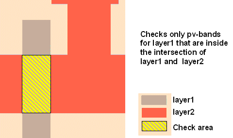

MaxAreaVariabilityCheck
-layer1 layer1_name
-layer2 layer2_name
-subwindow expr_number
-minAreaChange area_size
[-security {no | yes}]
[-markerLayer layer_name]
[-referenceLayer1 “%drawn” | “%retarget” | layer_name]
[-minContourCondition contour_condition]
[-maxContourCondition contour_condition]
[-checkName cName]
[-priority cPriority]
[-comment comment_text]
[-classify handle]
[-appendMarker extra_markers_layer]
[-maxContourHandle max_contour_handle -minContourHandle min_contour_handle]
{-database db_name | -layerOut return_layer_name
| -database db_name -layerOut return_layer_name}
MaxAreaVariabilityCheck
-layer1 layer1_name
-layer2 layer2_name
-pdkCheckName check_template
-database db_name
[additional_options]
Performs a variability check on PV-band geometries in areas where the target -layer1 overlaps the target -layer2. If the -markerLayer option is used, the check is limited to PV-band data which lies inside geometries on the marker layer. This check is used to identify problems such as large resistance fluctuations and poly gate critical dimension (CD) control issues.
MaxAreaVariabilityCheck (MAVC) checks the area between the inside and outside edges of a PV-band. A violation exists when the area of the absolute PV-band, normalized by the -layer1 and -layer2 intersection area, is greater than or equal to that specified by the -minAreaChange option. In situations such as is shown in Figure 1, the check sums the two areas, and then normalizes that value by the -layer1 and -layer2 intersection. The check flags violations only on areas in which the PV-band data for -layer1 intersects -layer2.
This check writes all discovered errors to the Calibre nmDRC RDB. The function associates a score with each error, and writes it to the Check Database specified by the -database argument. The score is calculated as the area of the model-based violation.
If used with a PDK, the function calls a MaxAreaVariabililtyCheck defined in the PDK and runs it for the specified layers, writing check results to the specified database.
This check is not commutative with respect to -layer1 and -layer2. The two operations shown below produce different results:
MaxAreaVariabilityCheck -layer1 A -layer2 B -subwindow 1 ...
MaxAreaVariabilityCheck -layer1 B -layer2 A -subwindow 1 ...Required keyword and argument defining the name of the layer you are checking. This is the layer for which PV-bands are generated.
Required keyword and argument defining an additional target layer, with respect to which -layer1 is checked. This function evaluates those areas where -layer1 overlaps -layer2.

Required keyword and argument defining the process variation experiment to which this check applies. You must reference individual process variation experiments by their positions in the -opticalSpanList and-doseSpanList arguments to the PVband command used to generate the PV-band data being checked. Thus, expr_number refers to an index to a list of experiments.
Setting expr_number to a value of “expr_number_shift” causes the check to operate on a certain shift for a double-patterned PV-band with overlay (for example, -subwindow 1_N causes the check to only run on the north shift).
Required keyword and argument defining the minimum variability considered to be problematic. Variability is expressed as a ratio of Absolute PV-band area to interaction area. This check reports on variability that is greater than the value specified for this keyword.
Optional argument defining security privileges. If set to “yes”, the setup file is encrypted in the transcript.
Optional keyword and argument used to constrain the check to contours that lie within polygons on layer_name. The check ignores areas outside polygons on the layer.
A -layerOut layer or a derivation of a -layerOut layer should not be used as the input to ‑markerLayer, or a circular layer definition results.
Optional keyword and argument to have the check measurements calculated on a different layer than the input layer to the checks for which the PV-bands have been generated. The option is associated with the first drawn layer input to the check.
You can provide one of the following options as an input to this argument:
“%drawn” — Default. The check measurements are calculated with respect to the drawn layer input to the check with -layer.
“%retarget” — The check measurements are calculated with respect to the retarget layer of the input drawn layer of the check. The check stores the retarget layer name in the PDK.
layer_name — You can define any layer name to have the check measurements done with respect to it. This argument can be used when no PDK is used, and you know the name of the retarget layer.
Optional keyword and argument used to define certain contours to be used as the maximum contour for -layer1. The contour_condition can be defined as follows:
min — Specifies the command works on the inner PV-band contour.
max — Specifies the command works on the outer PV-band contour.
integer — This integer defines the order of the contour to be checked in the subwindow.
process condition list — This must be an ordered list, with 3, 4, 5, 6, 8, or 10 elements defining an explicit process condition. The list must be supplied as follows:
{optical1 dose1 size1 [resist1 etch1] [optical2 dose2 size2 [resist2 etch2]]}
These values must define a process condition (dose and focus settings) that is one of the conditions evaluated by the LFD::PVband or LFD::RegisterContour commands for the layer.
Optional keyword and argument used to define certain contours to be used as the minimum contour for -layer1. The contour_condition can be defined as follows:
min — Specifies the command works on the inner PV-band contour.
max — Specifies the command works on the outer PV-band contour.
integer — This integer defines the order of the contour to be checked in the subwindow.
process condition list — This must be an ordered list, with 3, 4, 5, 6, 8, or 10 elements defining an explicit process condition. The list must be supplied as follows:
{optical1 dose1 size1 [resist1 etch1] [optical2 dose2 size2 [resist2 etch2]]}
These values must define a process condition (dose and focus settings) that is one of the conditions evaluated by the LFD::PVband or LFD::RegisterContour commands for the layer.
This switch is useful when variations between layers are well-controlled, and you are interested in considering process variations of one layer over the nominal behavior of another.
Optional keyword and argument specifying the name to use for the check in the RDB. If not specified, the check in the RDB is assigned a system-generated name as defined in Table 1. Use this keyword to avoid name collisions when performing multiple checks of this type.
Optional keyword and argument specifying a priority for this check. If not specified, the check in the RDB is assigned a system-generated priority based on the -subwindow value and default ranking of 3, as defined in Table 2. cPriority must be an integer value.
Optional keyword and argument used with -database for defining the comment text to be reported in the RDB if the check encounters a violation of the type. If not specified, the comment for a MAVC violation is “Area Variability Violation: Improve symmetry. Avoid low aspect ratio figures. Use long rectangular structures.”
The comment_text must be a single string, so comments containing spaces must be enclosed in braces. For example:
-comment {This is my comment.} Optional keyword and argument used to define a handle to point to an LFD::ClassifyConfig object.
Optional keyword and argument used to add the polygons in the extra_markers_layer layer to the output of the check. The output retains the properties on the extra_markers_layer layer supported by the check. This option is not allowed for checks that are tied to an LFD::StructureOptimizer.
Optional keyword and argument specifying the name of the maximum layer used to perform Calibre LFD checks on specific contour handles. This option is for use with the contour handle generated using the Customizable PV-Bands flow.
Optional keyword and argument specifying the name of the minimum layer used to perform Calibre LFD checks on specific contour handles. This option is for use with the contour handle generated using the Customizable PV-Bands flow.
Required keyword and argument defining the RDB to which spacing values for violations identified by the check are written. You must indicate where the violations are written by specifying -database or -layerOut or both.
Required keyword and argument defining the name of a derived layer to which the violations identified by the check is written. This layer exists in memory and can be referenced in subsequent Calibre nmDRC operations. You must indicate where the violations are written by specifying -database or -layerOut or both.
A -layerOut layer or a derivation of a -layerOut layer should not be used as the input to ‑markerLayer, or a circular layer definition results.
Required keyword and argument specifying the name of the check template defining how the check is performed.
Optional keywords and arguments allowed only when the security settings within the PDK permit you to modify the settings for the command. These can be any of the options for the non-PDK MaxAreaVariabilityCheck command. Any additional options specified overrides the options defined within the PDK.
Verify that polysilicon gates do not vary more than 20% with respect to design intent across all conditions specified by subwindow 2:
LFD::MaxAreaVariabilityCheck -layer1 poly -layer2 active -subwindow 2 \
-minAreaChange 0.20 -database maxAreaVariability.rdb